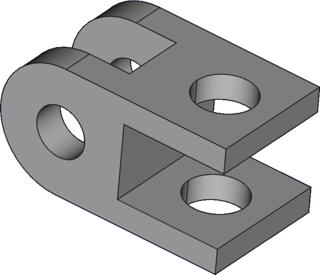

Externe geometrieGéométrie externeExternal geometry
In H09 plaatsten we uitsparingen met vaste maten. Maar dan "weet" zo'n gat niets van de bak: verander je de behuizing, dan blijft het gat staan waar het stond. Met externe geometrie koppel je je nieuwe schets aan bestaande randen, zodat alles netjes meebeweegt.En H09, on plaçait les évidements avec des cotes fixes. Mais le trou « ignore » la boîte : si elle change, il reste sur place. La géométrie externe lie le nouveau croquis aux arêtes existantes.In H09 we placed openings with fixed dimensions. But then the hole "knows" nothing about the box: change the enclosure and the hole stays put. External geometry links your new sketch to existing edges so everything moves together.
- uitleggen wat externe geometrie is en waarom je ze gebruiktexpliquer la géométrie externe et son utilitéexplain what external geometry is and why you use it
- een bestaande rand of hoekpunt in een schets importerenimporter une arête/sommet existant dans un croquisimport an existing edge or vertex into a sketch
- je nieuwe geometrie aan die referentie vastleggencontraindre votre géométrie à cette référenceconstrain your new geometry to that reference
Workbench: Sketcher — binnen een schets op een vlak.Atelier : Sketcher — dans un croquis.Workbench: Sketcher — inside a sketch.
Commando: Schets → Sketcher-gereedschap → Externe geometrie. Klik de rand, stop met rechtsklik/Esc.Commande : Esquisse → Géométrie externe. Arête, puis clic droit.Command: Sketch → Sketcher tools → External geometry. Edge, then right-click.
- Start Externe geometrie.Géométrie externe.External geometry.
- Klik de rand → rechtsklik.Arête → clic droit.Edge → right-click.
- Element + referentie → constraint.Élément + référence → contrainte.Element + reference → constraint.
01Het probleem: losse maten "weten" niets van de bakLe problème : des cotes isoléesThe problem: loose dimensions know nothing
Stel: je plaatst een schroefgat op 10 mm van de rand met een gewone maat. Maak je de bak later breder, dan blijft dat gat op zijn oude plek — niet meer netjes t.o.v. de nieuwe rand. De oorzaak: je maat verwijst naar een vast punt, niet naar de rand van de bak. Externe geometrie lost dit op.Un trou coté à 10 mm du bord reste figé si la boîte s'élargit : la cote vise un point fixe, pas l'arête. La géométrie externe règle cela.Place a screw hole 10 mm from the edge with a plain dimension; widen the box later and the hole stays put — no longer right by the new edge. The dimension points to a fixed point, not the box edge. External geometry fixes this.
02Een rand importeren als referentieImporter une arête comme référenceImporting an edge as a reference
Externe geometrie is geometrie — een rand of hoekpunt — die buiten je huidige schets ligt, maar die je erin haalt als referentie. FreeCAD toont ze als een gekoppelde (gelinkte) lijn. Zo gebruik je ze:La géométrie externe est une arête/un sommet hors du croquis, importé comme référence (ligne liée). Procédure :External geometry is geometry — an edge or vertex — outside your current sketch, brought in as a reference (shown as a linked line). To use it:
- 1Open je schets op het vlak en kies het externe-geometrie-commando.Waarom: dit zet de modus klaar om een bestaande rand te projecteren.Dans le croquis, choisissez la commande géométrie externe.Pourquoi : pour projeter une arête existante.In your sketch, pick the external geometry command.Why: it readies the mode to project an existing edge.
- 2Klik de rand of het hoekpunt van de bak aan; klik daarna rechts om te stoppen.Waarom: de rand verschijnt nu als referentie in je schets.Cliquez l'arête de la boîte, puis clic droit pour arrêter.Pourquoi : l'arête devient une référence.Click the box's edge or vertex, then right-click to stop.Why: the edge now appears as a reference in your sketch.
- 3Geef je eigen geometrie een constraint t.o.v. die referentie (bv. samenvallend, of een afstand van 10 mm).Waarom: pas dán zit je uitsparing of gat echt vast aan de bak.Contraignez votre géométrie à cette référence (coïncidence, distance).Pourquoi : alors le trou est lié à la boîte.Constrain your own geometry to that reference (coincident, or a 10 mm distance).Why: only then is your hole truly tied to the box.

Een geïmporteerde rand is enkel een referentie — ze doet pas iets als je er een constraint aan koppelt. Externe geometrie + een constraint = je nieuwe schets wordt afhankelijk van de bestaande vorm en past zich automatisch aan.Une arête importée n'est qu'une référence : elle n'agit qu'avec une contrainte. Le croquis devient dépendant de la forme.An imported edge is only a reference — it does nothing until you add a constraint. External geometry + a constraint = your sketch depends on the existing shape and adapts automatically.
Koppel je connectoruitsparing en schroefgaten met externe geometrie aan de wanden van je bak. Schaal je de behuizing later op voor een grotere printplaat, dan blijven de opening en de gaten vanzelf op de juiste plek t.o.v. de randen. Geen handmatig herpositioneren.Liez l'ouverture et les trous aux parois : en agrandissant le boîtier, tout reste bien placé.Tie the connector opening and screw holes to the walls: scale the enclosure up later and they stay correctly placed relative to the edges.
Open de schets van een schroefgat. Importeer met externe geometrie de bovenrand (of een hoekpunt) van de bak en geef het gatmiddelpunt een afstand van 8 mm tot die rand. Wijzig daarna de breedte van de bak (bv. 80 → 100 mm) en controleer dat het gat netjes meebeweegt en op 8 mm van de rand blijft.Importez l'arête de la boîte, contraignez le centre du trou à 8 mm. Changez la largeur (80 → 100 mm) et vérifiez que le trou suit.Import the box edge via external geometry, constrain the hole centre 8 mm from it. Change the box width (80 → 100 mm) and check the hole follows.
04Veelgemaakte foutenErreurs fréquentesCommon mistakes
- Vergeten rechts te klikken. Het externe-geometrie-commando blijft anders actief; klik rechts of Esc om te stoppen.Oublier le clic droit. La commande reste active ; clic droit/Échap.Forgetting to right-click. The command stays active; right-click or Esc to stop.
- Geen constraint op de referentie. Een geïmporteerde rand zonder constraint koppelt niets. Voeg een samenvallend- of afstandsconstraint toe.Pas de contrainte. Une arête importée sans contrainte ne lie rien.No constraint on the reference. An imported edge without a constraint links nothing.
- Te veel referenties stapelen. Dat maakt je model fragiel. Houd het eenvoudig; robuust modelleren komt in H19.Trop de références. Modèle fragile. Restez simple (H19).Stacking too many references. It makes the model fragile. Keep it simple (H19).
05Samenvatting
Externe geometrie haalt een rand of hoekpunt van je bestaande model in je schets als referentie. Pas wanneer je je eigen geometrie eraan vastlegt met een constraint, wordt je schets afhankelijk van de bak en beweegt alles mee bij wijzigingen. Zo blijven uitsparingen en gaten altijd op de juiste plek t.o.v. de randen.La géométrie externe importe une arête comme référence ; avec une contrainte, le croquis dépend de la forme et suit les changements.External geometry brings an edge/vertex into your sketch as a reference; once you constrain to it, the sketch depends on the box and follows changes.
- Externe geometrie = bestaande rand/hoekpunt als referentie in je schets.Arête existante comme référence dans le croquis.An existing edge/vertex as a reference in your sketch.
- Werkt pas met een constraint erop (rechtsklik om commando te stoppen).N'agit qu'avec une contrainte (clic droit pour arrêter).Only works with a constraint on it (right-click to stop).
- Resultaat: uitsparingen/gaten bewegen mee als je de bak wijzigt.Résultat : tout suit les changements.Result: openings/holes follow when you change the box.